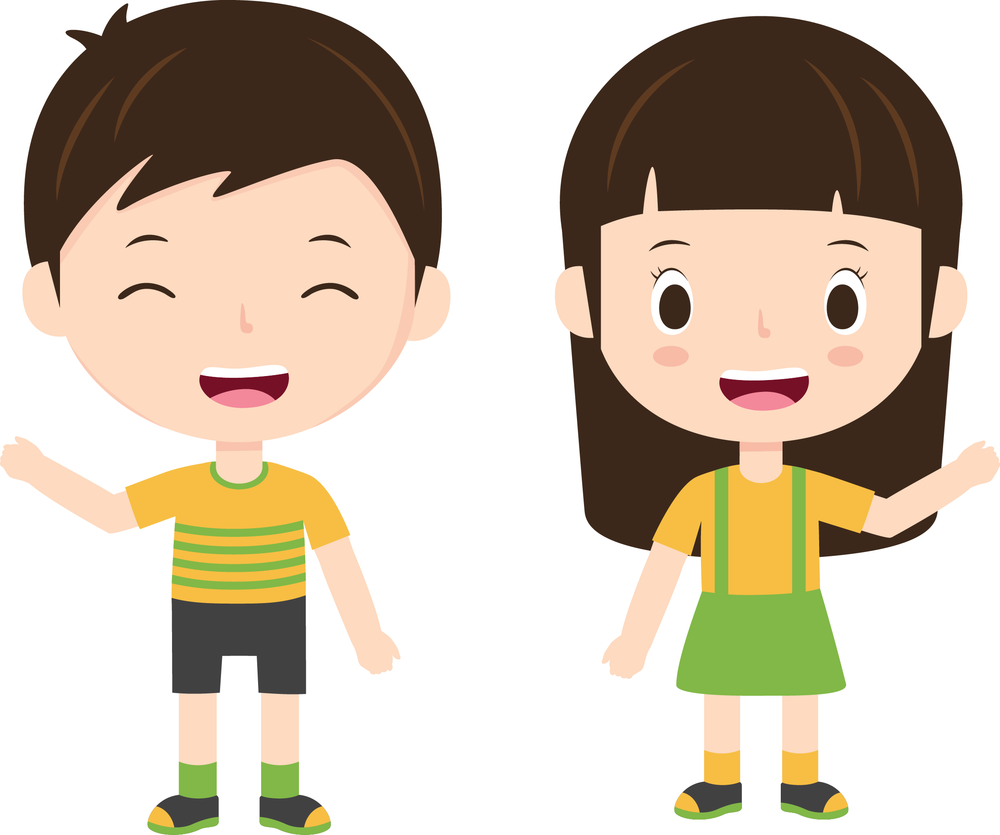
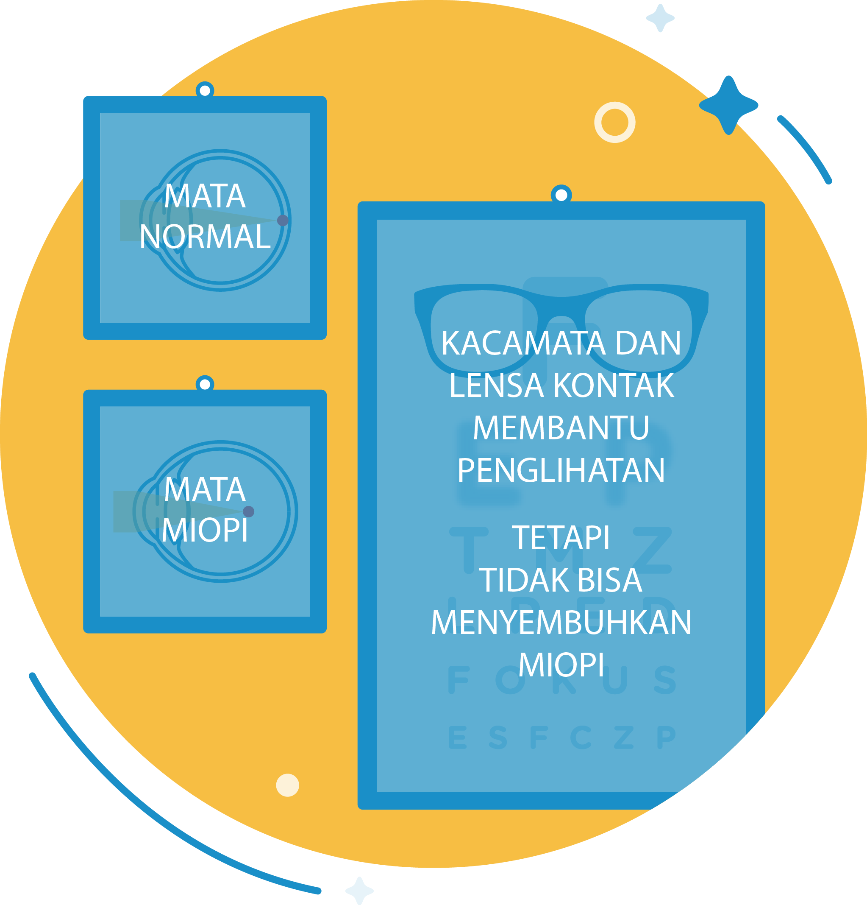
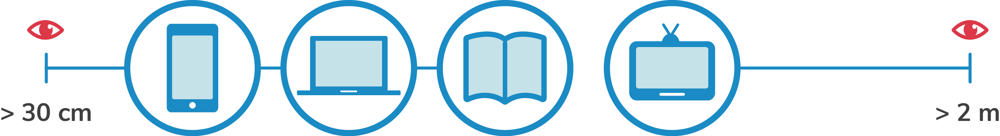
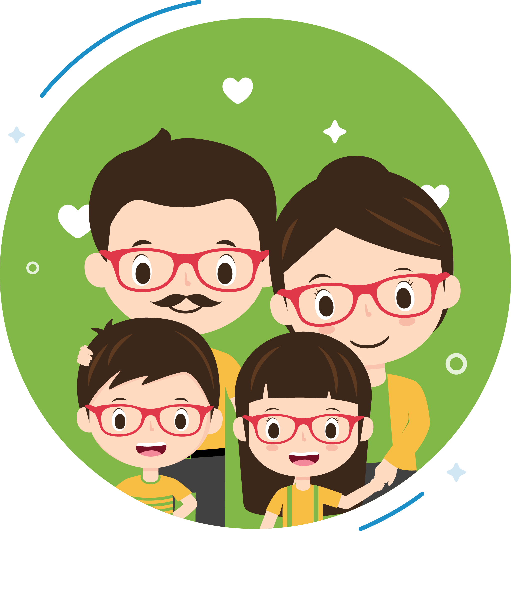
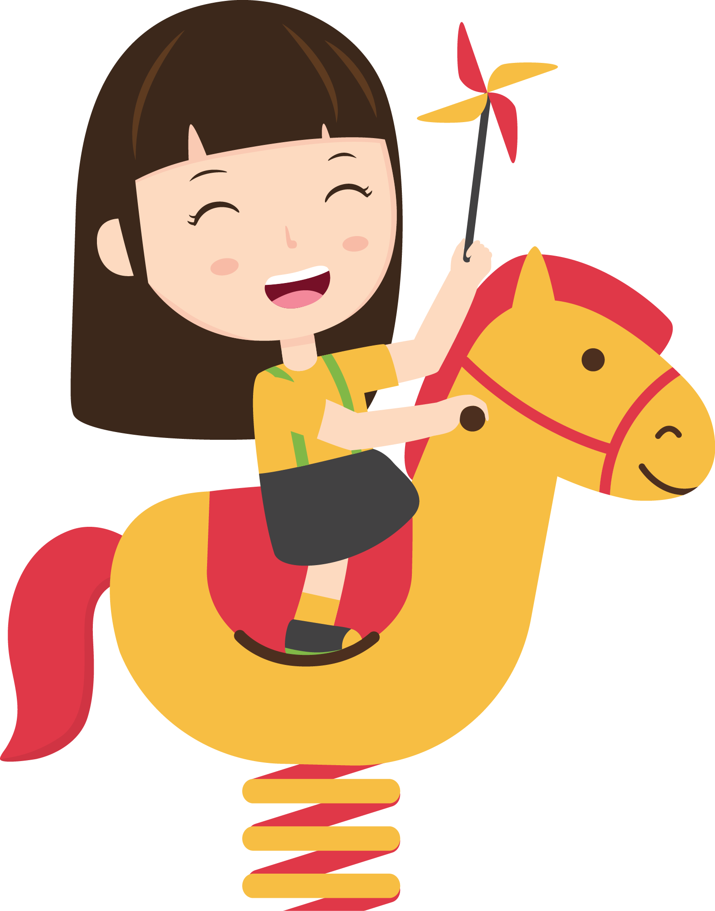

Keceriaan berawal dari mata sehat
Ayo cegah miopi sejak dini!

APA ITU MIOPI?
- Miopi atau rabun jauh adalah kondisi dimana mata tidak bisa melihat benda jauh dengan jelas.
- Terjadi karena cahaya yang masuk ke dalam mata difokuskan di depan retina.
- Bentuk bola mata pada penderita miopi lebih panjang daripada mata normal.

JUMLAH PENDERITA MIOPI
AKAN MENCAPAI 50% POPULASI DUNIA
AKAN MENCAPAI 50% POPULASI DUNIA

MENGECEK MATA SECARA BERKALA
MINIMAL SEKALI DALAM SETAHUN
MINIMAL SEKALI DALAM SETAHUN
PENYEBAB MIOPI
1.
AKTIVITAS JARAK DEKAT
Membaca buku, menggunakan HP/komputer/tablet, dan menonton TV dalam jarak yang dekat dan waktu yang lama.

MENGECEK MATA SECARA BERKALA
MINIMAL SEKALI DALAM SETAHUN
MINIMAL SEKALI DALAM SETAHUN
2.
GENETIK
Keturunan dari orang tua yang menderita miopi.

2.
GENETIK
Keturunan dari orang tua yang menderita miopi.

AKTIVITAS MENCEGAH MIOPI
Salah satu cara efektif mencegah miopi adalah dengan mengajak anak untuk beraktivitas bersama, baik di dalam atau luar ruangan. Ingin tahu aktivitas apa saja yang bisa dilakukan?